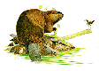
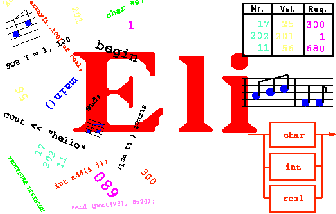
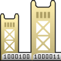
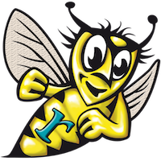
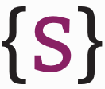

About
CoCoDo is a coding dojo where you can enjoy an entire day of compiler programming under gentle guidance of field experts.Compiler construction comprises, but is not limited to, lexical analysis, syntactic analysis, preprocessing, context handling, code generation, code optimisation, virtual machines, interpreters, smell detection, clone management, portability, migration, refactoring, domain-specific language design, linking and loading, assembling and disassembling, generics and reflection, numerous paradigms and so much more.
Technologies
ANTLR
- ANTLR version 4 (download)
- Main website: antlr.org
- Works with Java, C#, JavaScript, Python2, Python3
- Wikipedia: (English) (Dutch) (French) (German) (Russian)
- Parsing algorithm: ALL(*)
- Example from antlr.org:
grammar Expr; prog: (expr NEWLINE)* ; expr: expr ('*'|'/') expr | expr ('+'|'-') expr | INT | '(' expr ')' ; NEWLINE : [\r\n]+ ; INT : [0-9]+ ;
- More examples: pragprog.com
- Maintained by Terence Parr
- Built on top of ANTLR:
Beaver

- Beaver version 0.9.11 (download)
- Main website: beaver.sourceforge.net
- Works with Java
- Parsing algorithm: LALR(1)
- Example from beaver.sourceforge.net:
%% %left RPAREN; %left MULT, DIV; %left PLUS, MINUS; %typeof NUMBER = "Number"; %typeof expr = "Expr"; %% expr = expr.a MULT expr.b {: return new Expr(a.value * b.value); :} | expr.a DIV expr.b {: return new Expr(a.value / b.value); :} | expr.a PLUS expr.b {: return new Expr(a.value + b.value); :} | expr.a MINUS expr.b {: return new Expr(a.value - b.value); :} | NUMBER.n {: return new Expr(n.doubleValue()); :} | LPAREN expr.e RPAREN {: return e; :} ;
- More examples: beaver.sourceforge.net
- Often used with:
Bison
- Bison version 3.0.4 (download)
- Main website: gnu.org
- Works with C, C++, Java
- Wikipedia: (English) (French) (German) (Russian)
- Parsing algorithms: LALR(1), GLR
- Example from gnu.org:
%token TYPE DOTDOT ID %left '+' '-' %left '*' '/' %% type_decl: TYPE ID '=' type ';' ; type: '(' id_list ')' | expr DOTDOT expr; id_list: ID | id_list ',' ID; expr: '(' expr ')' | expr '+' expr | expr '-' expr | expr '*' expr | expr '/' expr | ID;
- More examples: gnu.org
- Maintained by Akim Demaille and Paul Eggert
- Often used with:
BiYacc
- BiYacc (download)
- Main website: biyacc.yozora.moe
- Works with Haskell
- Parsing algorithm: BX
- Example from biyacc.yozora.moe:
Abstract data Arith = Add Arith Arith | Sub Arith Arith | Mul Arith Arith | Div Arith Arith | Num Natural | Var String deriving (Show, Eq, Read) Concrete Expr -> Expr '+' Term | Expr '-' Term | Term ; Term -> Term '*' Factor | Term '/' Factor | Factor ; Factor -> '-' Factor | Int | Name | '(' Expr ')' ; Actions Arith +> Expr Add x y +> (x +> Expr) '+' (y +> Term); Sub x y +> (x +> Expr) '-' (y +> Term); exp +> (exp +> Term); Arith +> Term Mul x y +> (x +> Term) '*' (y +> Factor); Div x y +> (x +> Term) '/' (y +> Factor); exp +> (exp +> Factor); Arith +> Factor Sub (Num 0) y +> '-' (y +> Factor); Num i +> (i +> Int); Var n +> (n +> Name); exp +> '(' (exp +> Expr) ')';
- More examples: biyacc.yozora.moe
- Maintained by Zirun Zhu, Yongzhe Zhang, Hsiang-Shang Ko, Pedro Martins, João Saraiva and Zhenjiang Hu
BtYacc
BtYacc
- BtYacc version 3.0 (download)
- Main website: siber.com
- Works with C++
- Parsing algorithms: backtracking, bottom-up
- Example from siber.com:
%left LO '+' '-' %left HI '*' '/' '%' %nonassoc UNARY %% expr: expr op1 expr %prec LO | expr op2 expr %prec HI | unary expr %prec UNARY ; op1 : '+' | '-' ; op2 : '*' | '/' | '%' ; unary : '+' | '-' | '*' | '&' ;
- Maintained by Chris Dodd and Vadim Maslov
Coco/R
Coco/R
- Coco/R (download)
- Main website: ssw.jku.at
- Works with C#, Java, C++, F#, VB.NET, Swift, Oberon
- Wikipedia: (English) (German) (Russian)
- Parsing algorithms: recursive descent, AG, LL(k)
- Example from ssw.jku.at:
COMPILER Sample CHARACTERS digit = '0'..'9'. TOKENS number = digit {digit}. IGNORE '\r' + '\n' PRODUCTIONS Sample (. int n; .) = { "calc" Expr<out n> (. Console.WriteLine(n); .) }. Expr<out int n> (. int n1; .) = Term<out n> { '+' Term<out n1> (. n = n + n1; .) }. Term<out int n> = number (. n = Convert.Int32(t.val); .) . END Sample.
- More examples: ssw.jku.at
- Maintained by Hanspeter Mössenböck, Markus Löberbauer and Albrecht Wöß
- Built on top of Coco/R:
DCG
Definite Clause Grammars
- SWI Prolog version 7.2.3 (download)
- Main website: swi-prolog.org
- Works with Prolog
- Wikipedia: (English) (Russian)
- Parsing algorithm: DCG
- Example from @grammarware/slps:
expr(E) --> lassoc(ops,atom,binary,E). expr(apply(N,Es)) --> name(N), +(atom,Es). expr(ifThenElse(E1,E2,E3)) --> reserved("if"), expr(E1), reserved("then"), expr(E2), reserved("else"), expr(E3).
- More examples: pathwayslms.com
- DCG contributors
Eli

- Eli version 4.8.1 (download)
- Main website: eli-project.sourceforge.net
- Parsing algorithm: AG
- Example from eli-project.sourceforge.net:
ClassDeclaration: Modifiers 'class' Identifier Super Interfaces ClassBody . Super: 'extends' InhName / . Interfaces: ['implements' InterfaceTypeList] . InterfaceTypeList: InterfaceType / InterfaceTypeList ',' InterfaceType . ClassBody: '{' ClassBodyDeclarations '}' . ClassBodyDeclarations: / ClassBodyDeclarationList . ClassBodyDeclarationList: ClassBodyDeclaration / ClassBodyDeclarationList ClassBodyDeclaration .
- More examples: eli-project.sourceforge.net
Ensō
- Ensō (download)
- Main website: @enso-lang/enso
- Parsing algorithm: GLL
- Example from cs.utexas.edu:
start G G ::= [Grammar] "start" start:</rules[it]> rules:R* R ::= [Rule] name:sym "::=" arg:A A ::= [Alt] alts:C + @"|" C ::= [Create] "[" name:sym "]" arg:S | S S ::= [Sequence] elements:F* F ::= [Field] name:sym ":" arg:P | P P ::= [Lit] value:str | [Value] kind:("int" | "str" | "real" | "sym") | [Ref] "<" path:Path ">" | [Call] rule:</rules[it]> | [Code] "{" code:Expr "}" | [Regular] arg:P "*" Sep? { optional && many } | [Regular] arg:P "?" { optional } | "(" A ")" Sep ::= "@"sep:P
- More examples: enso-lang.org
- Maintained by William R. Cook, Alex Loh and Tijs van der Storm
Frown
- Frown version 0.6.1 (download)
- Main website: cs.ox.ac.uk
- Works with Haskell
- Parsing algorithm: LALR(k)
- Example from cs.ox.ac.uk:
import Char data Expr = Ident Char | Apply Expr Expr deriving (Show) type Terminal = Char %{ Terminal = guard {isAlpha} as "letter" | '(' | ')'; Nonterminal = expr {Expr}; expr {Ident x} : "letter" {x}; {Apply t u} | expr {t}, '(', expr {u}, ')'; }% frown ts = fail "syntax error"
- Maintained by Ralf Hinze and Arjan Oosting
- Built on top of Frown:
GDK
Grammar Deployment Kit
- GDK version 1.4.4 (download)
- Main website: gdk.sourceforge.net
- Works with C
- Parsing algorithm: LL
- Example from @slebok/zoo:
specification : rule+; rule : ident ":" disjunction ";"; disjunction : {conjunction "|"}; conjunction : term+; term : basis repetition?; basis : ident | literal | "%epsilon" | alternation | group ; repetition : "+" | "*" | "?"; alternation : "{" basis basis "}" repetition; group : "(" disjunction ")" ;
- More examples: gdk.sourceforge.net
- Maintained by Jan Kort
GOLD
 GOLD Parsing System
- GOLD version 5 (download)
- Main website: goldparser.org
- Works with Intel Asm, C, C#, D, Delphi, Java, Pascal, Python3, VB, VB.NET, C++
- Wikipedia: (English) (German)
- Parsing algorithms: LALR, DFA
- Example from goldparser.org:
Id = {Letter}{AlphaNumeric}* <Statement> ::= if Id then <Statement> | if Id then <Then Stm> else <Statement> | Id ':=' Id <Then Stm> ::= if Id then <Then Stm> else <Then Stm> | Id ':=' Id
- More examples: goldparser.org, goldparser.org
- Devin Cook and others
- Built on top of GOLD:
Happy
- Happy version 1.18.5 (download)
- Main website: haskell.org
- Works with Haskell
- Parsing algorithm: GLR
- Example from haskell.org:
Exp : let var '=' Exp in Exp { Let $2 $4 $6 } | Exp1 { Exp1 $1 } Exp1 : Exp1 '+' Term { Plus $1 $3 } | Exp1 '-' Term { Minus $1 $3 } | Term { Term $1 } Term : Term '*' Factor { Times $1 $3 } | Term '/' Factor { Div $1 $3 } | Factor { Factor $1 } Factor : int { Int $1 } | var { Var $1 } | '(' Exp ')' { Brack $2 }
- More examples: haskell.org
- Maintained by Andy Gill and Simon Marlow
- Often used with:
Irony
- Irony version BETA (download)
- Main website: irony.codeplex.com
- Works with C#
- Wikipedia: (English)
- Parsing algorithm: LALR(1)
- Example from irony.codeplex.com:
Expr.Rule = Term | UnExpr | BinExpr | PostFixExpr; Term.Rule = number | ParExpr | identifier; ParExpr.Rule = "(" + Expr + ")"; UnExpr.Rule = UnOp + Term; UnOp.Rule = ToTerm("+") | "-" | "++" | "--"; BinExpr.Rule = Expr + BinOp + Expr; BinOp.Rule = ToTerm("+") | "-" | "*" | "/" | "**"; PostFixExpr.Rule = Term + PostFixOp; PostFixOp.Rule = ToTerm("++") | "--"; AssignmentStmt.Rule = identifier + AssignmentOp + Expr; AssignmentOp.Rule = ToTerm("=") | "+=" | "-=" | "*=" | "/="; Statement.Rule = AssignmentStmt | Expr | Empty; ProgramLine.Rule = Statement + NewLine; Program.Rule = MakeStarRule(Program, ProgramLine); this.Root = Program;
- Irony contributors
JastAdd
- JastAdd version 2.2.2 (download)
- Main website: jastadd.org
- Parsing algorithm: RAG
- Example from @jastadd/examples:
Program ::= Block /PredefinedType:TypeDecl*/; Block ::= BlockStmt*; abstract BlockStmt; abstract Stmt: BlockStmt; abstract Decl: BlockStmt ::= <Name:String>; abstract TypeDecl:Decl; ClassDecl: TypeDecl ::= [Superclass:IdUse] Body:Block; VarDecl: Decl ::= Type:Access; AssignStmt: Stmt ::= Variable:Access Value:Exp; WhileStmt: Stmt ::= Condition:Exp Body:Stmt; abstract Exp; abstract Access:Exp; abstract IdUse: Access ::= <Name:String>; Use: IdUse; Dot:Access ::= ObjectReference:Access IdUse; BooleanLiteral : Exp ::= <Value:String>;
- More examples: @jastadd/examples, jastadd.org
- Maintained by Görel Hedin, Emma Söderberg, Emma Söderberg and Jesper Öqvist
JavaCC
- JavaCC version 6.0.1 (download)
- Main website: javacc.java.net
- Works with Java, C, C++
- Wikipedia: (English) (French) (German) (Russian)
- Parsing algorithm: LL(k)
- Example from engr.mun.ca:
double Primary() throws NumberFormatException : { Token t ; double d ; } { t=<NUMBER> { return Double.parseDouble( t.image ) ; } | <PREVIOUS> { return previousValue ; } | <OPEN_PAR> d=Expression() <CLOSE_PAR> { return d ; } | <MINUS> d=Primary() { return -d ; } }
- More examples: engr.mun.ca, javacc.org
- Maintained by Glassfish Kenai, Paul Cager, Tom Copeland and sreeni.
Kleenex
- Kleenex (download)
- Main website: kleenexlang.org
- Works with C
- Parsing algorithm: FST
- Example from @diku-kmc/kleenexlang:
main := (num /[^0-9]/ | other)* num := digit{1,3} ("," digit{3})* digit := /[0-9]/ other := /./
- Maintained by Niels Bjørn Bugge Grathwohl, Fritz Henglein, Ulrik Terp Rasmussen, Kristoffer Aalund Søholm, Sebastian Paaske Tørholm
Laja
- Laja version 2-007-beta (download)
- Main website: laja.tengstrand.nu
- Works with Java
- Parsing algorithms: scannerless, top-down, backtracking
- Example from laja.tengstrand.nu:
grammar example { digit = "5"; example = digit; Example example; example.setDigit(String digit); }
- More examples: laja.tengstrand.nu
- Maintained by Joakim Tengstrand
Parsec
- Parsec version 3.1.11 (download)
- Main website: wiki.haskell.org
- Works with Haskell, F#, Java, JavaScript, Erlang
- Wikipedia: (English)
- Parsing algorithms: monadic, recursive descent
- Example from web.archive.org:
import ParsecExpr expr :: Parser Integer expr = buildExpressionParser table factor <?> "expression" table = [[op "*" (*) AssocLeft, op "/" div AssocLeft] ,[op "+" (+) AssocLeft, op "-" (-) AssocLeft] ] where op s f assoc = Infix (do{ string s; return f}) assoc factor = do{ char '(' ; x <- expr ; char ')' ; return x } <|> number <?> "simple expression" number :: Parser Integer number = do{ ds <- many1 digit ; return (read ds) } <?> "number"
- Maintained by Antoine Latter
- Built on top of Parsec:
ParseLib
ParseLib
- ParseLib version 2015.1.1 (download)
- Main website: hackage.haskell.org
- Works with Haskell
- Parsing algorithm: monadic
- Example from haskell.org:
exprparser :: Parser Expr exprparser = buildExpressionParser table term <?> "expression" table = [ [Prefix (m_reservedOp "~" >> return (Uno Not))] , [Infix (m_reservedOp "&" >> return (Duo And)) AssocLeft] , [Infix (m_reservedOp "=" >> return (Duo Iff)) AssocLeft] ] term = m_parens exprparser <|> fmap Var m_identifier <|> (m_reserved "true" >> return (Con True)) <|> (m_reserved "false" >> return (Con False))
- Maintained by Jurriën Stutterheim and João Paulo Pizani Flor
- Built on top of ParseLib:
PRECC
PREttier Compiler-Compiler
- PRECC version 2.60 (download)
- Main website: preccx.sourceforge.net
- Works with C
- Parsing algorithm: LL(k)
- Example from preccx.sourceforge.net:
integer = [ <'+'>|<'-'> ] unsigned_int [ {<'E'>|<'e'>} [<'+'>] unsigned_int ] unsigned_int = (isdigit)+
- Maintained by Peter Breuer and Jonathan Bowen
Racket
- Racket version 6.7 (download)
- Main website: racket-lang.org
- Works with Racket
- Wikipedia: (English) (French) (German) (Russian)
- Parsing algorithm: LALR(1)
- Example from gist.github.com:
(define simple-math-lexer (lexer ("-" (token--)) ("+" (token-+)) ("let" (token-LET)) ("in" (token-IN)) ((re-+ number10) (token-NUM (string->number lexeme))) (identifier (token-VAR lexeme)) ;; recursively calls the lexer which effectively skips whitespace (whitespace (simple-math-lexer input-port)) ((eof) (token-EOF)))) (define simple-math-parser (parser (start exp) (end EOF) (error void) (tokens a b) (precs (left - +)) (grammar (exp ((LET VAR NUM IN exp) (make-let-exp $2 (num-exp $3) $5)) ((NUM) (num-exp $1)) ((VAR) (var-exp $1)) ((exp + exp) (make-arith-exp + $1 $3)) ((exp - exp) (make-arith-exp - $1 $3))))))
- More examples: matt.might.net, docs.racket-lang.org, docs.racket-lang.org
Ragel
Ragel
- Ragel version 7.0.0.9 (download)
- Main website: colm.net
- Works with C, C++, Assembler, Objective C, D, Go, Ruby, Java
- Wikipedia: (English) (French) (German) (Russian)
- Parsing algorithm: FSM
- Example from colm.net:
action dgt { printf("DGT: %c\n", fc); } action dec { printf("DEC: .\n"); } action exp { printf("EXP: %c\n", fc); } action exp_sign { printf("SGN: %c\n", fc); } action number { /*NUMBER*/ } number = ( [0-9]+ $dgt ( '.' @dec [0-9]+ $dgt )? ( [eE] ( [+\-] $exp_sign )? [0-9]+ $exp )? ) %number; main := ( number '\n' )*;
- Maintained by Adrian D. Thurston
- Built on top of Ragel:
Rascal

- Rascal version 0.7.1 (download)
- Main website: rascal-mpl.org
- Wikipedia: (English)
- Parsing algorithm: GLL
- Example from @usethesource/rascal:
start syntax Program = program: "begin" Declarations decls {Statement ";"}* body "end" ; syntax Declarations = "declare" {IdType ","}* decls ";" ; syntax IdType = idtype: Id id ":" Type t; syntax Statement = assign: Id var ":=" Expression val | cond: "if" Expression cond "then" {Statement ";"}* thenPart "else" {Statement ";"}* elsePart "fi" | cond: "if" Expression cond "then" {Statement ";"}* thenPart "fi" | loop: "while" Expression cond "do" {Statement ";"}* body "od" ; syntax Type = natural:"natural" | string :"string" | nil :"nil-type" ; syntax Expression = id: Id name | strcon: String string | natcon: Natural natcon | bracket "(" Expression e ")" > left concat: Expression lhs "||" Expression rhs > left ( add: Expression lhs "+" Expression rhs | min: Expression lhs "-" Expression rhs ) ; lexical Id = [a-z][a-z0-9]* !>> [a-z0-9]; lexical Natural = [0-9]+ ; lexical String = "\"" ![\"]* "\""; layout Layout = WhitespaceAndComment* !>> [\ \t\n\r%]; lexical WhitespaceAndComment = [\ \t\n\r] | @category="Comment" "%" ![%]+ "%" | @category="Comment" "%%" ![\n]* $ ; public start[Program] program(str s) { return parse(#start[Program], s); } public start[Program] program(str s, loc l) { return parse(#start[Program], s, l); }
- More examples: tutor.rascal-mpl.org
- Maintained by Paul Klint, Jurgen Vinju and Tijs van der Storm
SableCC
- SableCC version 3.7 (download)
- Main website: sablecc.org
- Works with Java
- Wikipedia: (English)
- Parsing algorithm: LALR(1)
- Example from engr.mun.ca:
Grammar expression; Lexer num = digit+; digit = '0'..'9'; blanks = (' ' | eol | tab)+; eol = cr | lf | cr lf; cr = #13; lf = #10; tab = #9; Parser Ignored blanks; program = exp ';'; exp = {mul:} exp [op:]'*' exp | {add:} exp [op:]'+' exp | {num:} num; Precedence Left mul; Left add;
- More examples: @SableCC/sablecc
- Maintained by Etienne M. Gagnon, Patrick Pelletier, Jean Privat, Jérôme Dassonville and Lucas Satabin
SJPT
Simple Java Parsing Toolkit
- SJPT version 0.10 (download)
- Main website: sjpt.sourceforge.net
- Works with Java
- Parsing algorithms: LL(1), LR(0), SLR(1), LR(1), LALR(1)
- Example from prdownloads.sourceforge.net:
import ro.infoiasi.donald.compiler.parser0.runtime.*; terminal SEMI, PLUS, MINUS, TIMES, DIVIDE, LPAREN, RPAREN; terminal Integer NUMBER, ID; non terminal Object expr_list, expr_part; non terminal Integer expr, factor, term; expr_list ::= expr_list expr_part | expr_part; expr_part ::= expr:e {: System.out.println(" = " + e); :} SEMI; expr ::= factor:f PLUS expr:e {: RESULT = new Integer(f.intValue() + e.intValue()); :} | factor:f MINUS expr:e {: RESULT = new Integer(f.intValue() - e.intValue()); :} | factor:f {: RESULT = new Integer(f.intValue()); :}; factor ::= factor:f TIMES term:t {: RESULT = new Integer(f.intValue() * t.intValue()); :} | factor:f DIVIDE term:t {: RESULT = new Integer(f.intValue() / t.intValue()); :} | term:t {: RESULT = new Integer(t.intValue()); :}; term ::= LPAREN expr:e RPAREN {: RESULT = e; :} | NUMBER:n {: RESULT = n; :} | ID:i {: RESULT = i; :};
- Maintained by Catalin Hritcu
Spoofax

TXL
- TXL version 10.6d (download)
- Main website: txl.ca
- Works with TXL, XML
- Wikipedia: (English)
- Parsing algorithms: top-down, backtracking
- Example from txl.ca:
define program [compilation_unit] end define define compilation_unit [definition_module] | [opt 'IMPLEMENTATION] [program_module] end define define definition_module [NL] DEFINITION MODULE [id] ; [NL][NL] [repeat import_] [repeat definition] END [id] . [NL] end define define program_module MODULE [id] [opt priority] ; [NL][NL] [repeat import_] [block] [id] . end define
- More examples: txl.ca
- Maintained by James Cordy